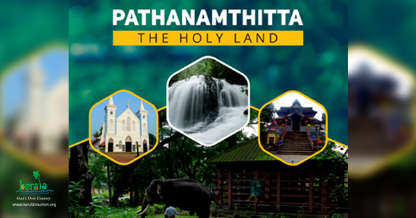
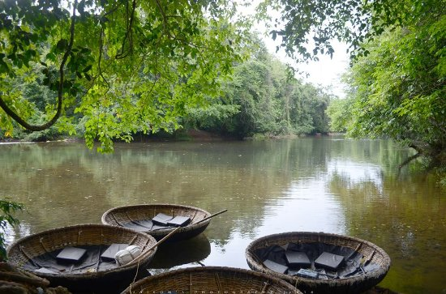
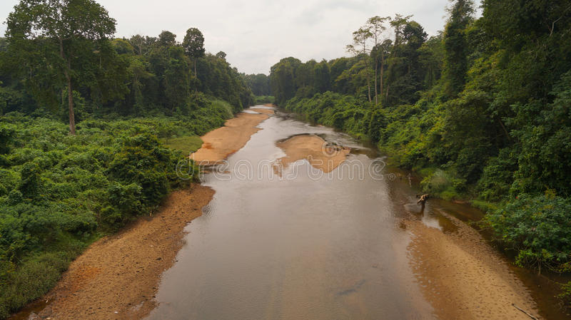
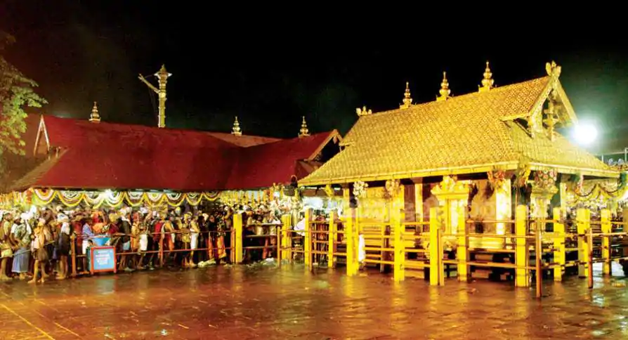
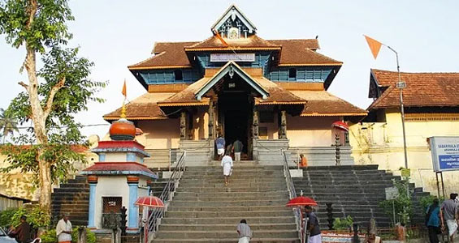
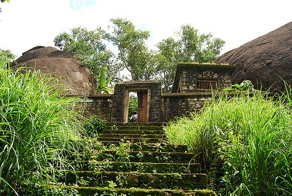
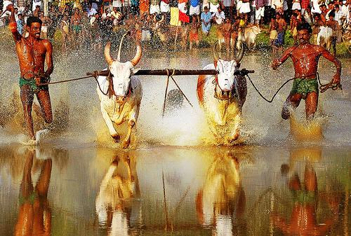
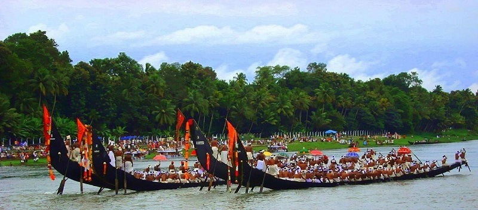

A hilly province of pristine splendour, the district of Pathanamthitta is hailed as the headquarters of pilgrim worship in Kerala. Three rivers course through its prosperous terrains comprising natural divisions of the lowlands, the midlands and the highlands. Interspersed with temples, rivers, mountain ranges and coconut groves, more than fifty per cent of the total area of this region is covered by forests.
Pathanamthitta has been dubbed a Heritage Village as it attracts visitors from all over the world for its spectacular water fiestas, religious shrines and cultural training centres. Pathanamthitta is also home to the unique AranmulaKannadi - metal mirrors that are meticulously handcrafted and the VasthuVidyaGurukulam, a village which practices the ancient Indian school of architecture.
Tourist Information Offices:
Tourist Information Office Ph.: 2326409
DTPC Office Ph.: 2229952, Email: ptadtpc@yahoo.co.in, Website: www.dtpcpathanamthitta.com
Devaswom Information Centre, Pamba Ph.: +91 4735 203339
Devaswom Guest House, Sabarimala Ph.: +91 4735 202056
Devaswom Information Centre, Sabarimala Ph.: +91 4735 202048
Getting there
By road: Pathanamthitta is well connected by an excellent network of roads to all major towns in Kerala. Pathanamthitta KSRTC Bus Station, Ph: 2229213
By rail: Chengannur (26 km); Thiruvalla (31 km)
By air: Thiruvananthapuram (119 km)
PLACES TO VISIT IN PATHANAMTHITTA
1.
Konni Forest Reserve

2.
Achankovil River

3.
Perunthenaruvi Waterfall

4.
Sabarimala Sri Dharmasastha Temple

5.
Aranmula Parthasarathy Temple

6. Gaviv

7.
Elephant Training Center - Konni

8.
Thrikkakkudi Rock-Cut Temple - Kaviyoor

9.
Maramadi Bull Race

10.
Aranmula
